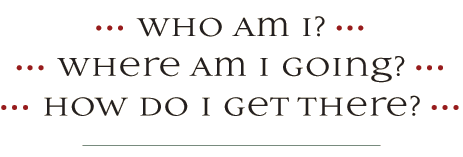

If you find you are asking yourself these questions more and more often, The Coaches Training Institute has the answer for you…Quest—
A Leader’s Journey.
Quest takes participants on an exploration of discovery and purpose. This powerful program helps participants discover their inner leader, identify their true purpose and moves them toward their purpose with confidence and grace.
Leadership, for CTI, is a way of moving through the world. Right now there seems to be a crisis — a crisis of leadership and a crisis of spirit. Quest gives leaders a safe place to begin to find, or reconnect with, their inner leader and to get to the heart of their true purpose.
Leadership begins with “self” — a deep knowing of who you are and where your path is leading. Quest will help you define your real purpose in the world.